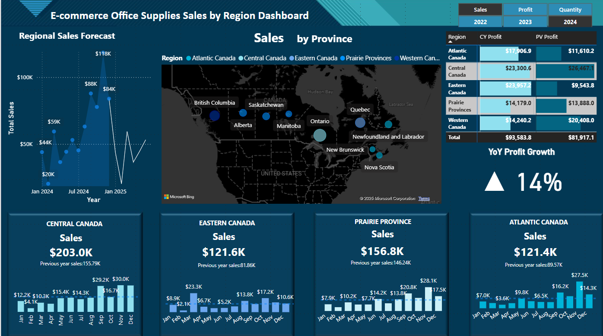

ABOUT ME
I'm a data geek, tech enthusiast, and Formula 1 fanatic who thrives on solving complex problems and uncovering insights from data. Whether it's optimizing SQL queries, automating workflows, or building predictive models, I love working at the intersection of data, technology, and innovation. I thrive in fast-paced environments, whether it's managing high-volume datasets or following the latest F1 races, where strategy, precision, and speed define success. I’m always curious, always learning, and always up for a new challenge—whether it's mastering a new big data too or debating the latest race strategy in Formula 1.

Aug 2016 - May 2020
Bachelor of Engineering
JSS Academy of Technical Education, India
Aug 2020 - July 2022
System Engineer
Infosys, Bangalore
Developed web applications, APIs, optimized SQL queries.
Sept 2022 - April 2023
Graduate Certificate - Big Data Analytics
Georgian College, Barrie, Canada
May 2023 - Feb 2025
Analyst
Cronos, Stayner, Ontario
Inventory analysis, automation, and optimization.
Technical Skills
Tools and Platforms
Visual Studio
Git
Power BI
Linux
Oracle VirtualBox
Programming & Databases
SQL
Python
C#
Big Data & Distributed Systems
Hadoop
HDFS
MapReduce
YARN
Zookeeper
Data Streaming & Ingestion
Kafka
Spark Streaming
Data Processing & ETL
Data Warehousing
Database Management
Certifications
AWS Certified Cloud Practitioner
Issued: March 2024
Python Application Programming
Issued: October 2018 - Kodebay
Web Development
Issued: October 2018 - Kodebay

E-commerce Office Supplies Sales by Region
Developed a dynamic Power BI dashboard to track sales performance, profit, and quantities sold across different regions and time frames. It helps business stakeholders quickly visualize and identify trends, enabling informed decision-making regarding regional sales strategy and resource allocation.
Technology Stack:
- Power BI
- Excel
- Data Modeling (DAX)
- Data Visualization